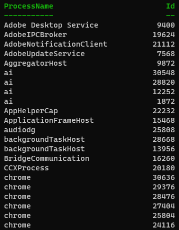
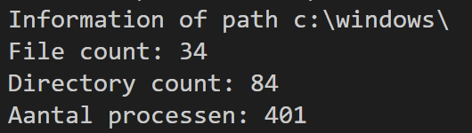
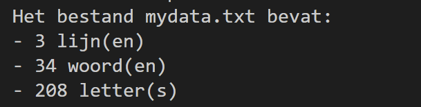

PXL · Extended lab 02
Answers
Navigeer per onderdeel door de labantwoorden en eindcontrole.
Deel 1
Selecteren, filteren en sorteren
1. Processen selecteren met Select-Object
Gebruik voor alle deelvragen de uitvoer van Get-Process als invoer.
1.1 Toon de eerste vijf processen
Get-Process | Select-Object -First 5
1.2 Toon de laatste vijf processen
Get-Process | Select-Object -Last 5
1.3 Toon het tweede proces
Get-Process | Select-Object -Index 1
1.4 Toon alle processen vanaf het vijfde proces
Get-Process | Select-Object -Skip 4
1.5 Toon de unieke procesnamen
Toon alleen de property Name en zorg dat iedere procesnaam maar één keer voorkomt.
Get-Process | Select-Object -Property Name -Unique
-Unique = om elke procesnaam maar 1-malig weer te geven
1.6 Tel de unieke procesnamen
Toon uitsluitend het aantal unieke procesnamen op je systeem.
Get-Process | Select-Object -Property Name -Unique | Measure-Object | Select-Object count
2. Grootste werksets
Toon de vijf processen met de grootste werkset. De uitvoer bevat:
- de proces-ID met kolomnaam
Pid; - de procesnaam met kolomnaam
ProcessName; - de werkset in megabytes met kolomnaam
WS(MB).
Sorteer eerst aflopend op de property WS en selecteer daarna de eerste vijf processen.
Verwachte structuur — de waarden verschillen per systeem:

Get-Process | Sort-Object -Descending WS | Select-Object -First 5 @{N='Pid';E={$_.Id}}, ProcessName, @{N='WS(MB)';E={[math]::Round($_.WS / 1MB, 2)}}
3. Processen filteren
3.1 Procesnaam begint met p
Toon alle processen waarvan de procesnaam met de letter p begint. Geef minimaal twee werkende oplossingen.
- Get-Process p*
- Get-Process -ProcessName p*
- Get-Process -Name p*
3.2 Processen met een grafisch venster
Toon alle processen die een zichtbaar grafisch venster hebben.
Tip: Onderzoek de properties waarvan de naam Window bevat.
1. Welke processen bevatten "Window"?
Get-Process | Get-Member -Name *Window*
2. Bekijk welke waarden erin staan.
Get-Process | Select-Object ProcessName, MainWindowTitle, MainWindowHandle*
Je zal zien dat processen met een venster een titel hebben(middenste kolom) en een handle(laatste kolom) hebben die geen waarde 0 heeft.
3. Filter op dat patroon
Get-Process | Where-Object MainWindowTitle -ne ''
OF
Get-Process | Where-Object MainWindowHandle -ne 0
-ne staat voor not equal. Bij het eerste commando geef je dus aan dat je alle processen wilt waarvan de MainWindowTitle niet overeenkomt met een lege tekst. Bij het tweede commando geef je aan dat je alle processen wilt waarvan de MainWindowHandle niet overeenkomt met 0.
3.3 Minstens 30 seconden CPU-tijd
Toon alle processen die minstens 30 seconden CPU-tijd hebben gebruikt. Geef minimaal twee werkende oplossingen.
1. Zoek eerst naar een waarde i.v.m. CPU-tijd.
Get-Process | Get-Member -Name *CPU*
2. Filter al met een Where-Object welke processen een tijd hebben van minstens 30 seconden.
Get-Process | Where-object CPU -ge 30
-ge = greater than and equal to.
3. Toon nu de ProcessName en CPU waarden.
Get-Process | Where-Object CPU -ge 30 | Select-Object ProcessName, CPU
OF
Get-Process | Where-Object { $_.CPU -ge 30 } | Select-Object ProcessName, CPU
OF
Get-Process | Where-Object TotalProcessorTime -ge '00:00:30' | Select-Object ProcessName, TotalProcessorTime
3.4 Sorteren op procesnaam en ID
Toon ProcessName en Id van alle processen. Sorteer eerst oplopend op procesnaam en bij gelijke namen aflopend op ID.

Get-Process | Sort-Object @{Expression='ProcessName';Ascending=$true}, @{Expression='Id';Descending=$true} | Select-Object ProcessName, Id
4. Services filteren
4.1 Automatisch gestarte services
Toon de services waarvan het opstarttype Automatic is.
Get-Service | Where-Object -Property StartType -eq 'Automatic'
4.2 Draaiende services die niet gestopt kunnen worden
Toon services die:
- de status
Runninghebben; - niet gestopt kunnen worden.
Geef minimaal twee werkende oplossingen.
Get-Service | Where-Object -Property Status -eq 'running' | Where-Object -Property CanStop -eq $false
OR
Get-Service | Where-Object {$_.Status -eq 'running' -and $_.CanStop -eq $false}
5. Bestanden filteren en tellen
Gebruik een zelfgekozen testmap met enkele onderliggende mappen. Vermeld het gebruikte pad in answers.md.
C:\powershell
5.1 Bestanden van minstens drie dagen oud
Toon recursief alle bestanden waarvan LastWriteTime minstens drie dagen in het verleden ligt.
Get-ChildItem -File -Path "C:\Windows\" -Recurse | Where-Object {$_.LastWriteTime -le (Get-Date).AddDays(-3)}
5.2 Oude tekstbestanden
Toon recursief alle .txt-bestanden die minstens drie dagen oud zijn.
Get-ChildItem -File -Path "C:\Users\12501999\Documents\" -Recurse | Where-Object {$_.CreationTime -le (Get-Date).AddDays(-3)}
5.3 Tel oude tekstbestanden
Toon alleen het aantal .txt-bestanden dat minstens drie dagen oud is.
(Get-ChildItem -Filter *.txt -Path "C:\Users\12501999\Documents\" -Recurse | Where-Object {$_.CreationTime -le (Get-Date).AddDays(-3)}).Count
OR
(Get-ChildItem -Filter *.txt -Path "C:\Users\12501999\Documents\" -Recurse | Where-Object {$_.CreationTime -le (Get-Date).AddDays(-3)} | Measure-Object).Count
5.4 Tweede letter is a
Tel recursief alle bestanden waarvan de tweede letter van de bestandsnaam a is. PathProcessing.txt is een voorbeeld van een overeenkomende naam.
(Get-ChildItem -File -Path C:\Users\12501999\ -Recurse -Filter '?a*' | Measure-Object).Count
OR
(Get-ChildItem -File -Path C:\Users\12501999\ -Recurse | Where-Object {$_.Name -like '?a*'}).Count
OR
(Get-ChildItem -File -Path C:\Users\12501999\ -Recurse | Where-Object {$_.Name -match '^.a'}).Count
6. Uitvoerbare bestanden onderzoeken
Let op: Deze opdrachten lezen systeemmappen en kunnen meldingen over ontbrekende toegangsrechten geven. Ze wijzigen of verwijderen geen bestanden. Gebruik -ErrorAction SilentlyContinue waar nodig.
6.1 Filter uitvoerbare bestanden in C:\Windows
Toon alle .exe-bestanden rechtstreeks in C:\Windows waarvan:
- de bestandsgrootte groter is dan 1 MB; of
- de bestandsgrootte exact 28.672 bytes is.
Get-ChildItem -File *.exe -Path C:\Windows\ -ErrorAction SilentlyContinue | Where-Object {$_.Length -gt 1MB -or $_.Length -eq 28672}
6.2 Extra: zoek recursief met diepte 2
Voer dezelfde filter uit in C:\Windows en de onderliggende mappen, met een maximale recursiediepte van 2.
Get-ChildItem -Recurse -Depth 2 -File *.exe -Path C:\Windows\ -ErrorAction SilentlyContinue | Where-Object {$_.Length -gt 1MB -or $_.Length -eq 28672}
6.3 Tien grootste bestanden
Toon de tien grootste bestanden rechtstreeks in C:\Windows\System32. Toon minstens Name, Length en FullName.
Get-ChildItem -File C:\Windows\System32\ -ErrorAction SilentlyContinue | Sort-Object Length -Descending -Top 10 | Select-Object Name,Length,FullName
OR
Get-ChildItem -File C:\Windows\System32\ -ErrorAction SilentlyContinue | Sort-Object Length -Descending | Select-Object -Top 10 Name,Length,FullName
7. Procesproperties en meervoudig sorteren
7.1 Geheugenproperties
Toon van alle processen:
Name;Id;PM— pageable memory;NPM— non-paged memory.
Sorteer aflopend op procesnaam.
Get-Process | Sort-Object -Property ProcessName -Descending | Select-Object Name,Id,PM,NPM
7.2 Aflopend sorteren op naam en ID
Toon alle processen met één pipeline, eerst aflopend gesorteerd op procesnaam en vervolgens aflopend op proces-ID.
Get-Process | Sort-Object -Descending ProcessName, Id
Deel 2
Scripts en meten
8. Script HowManyFilesDir.ps1
Maak scripts/HowManyFilesDir.ps1 dat:
- het aantal bestanden rechtstreeks in
C:\Windowstoont; - het aantal mappen rechtstreeks in
C:\Windowstoont; - het aantal actieve processen toont;
- comment-based help bevat die met
Get-Helpkan worden opgevraagd.
Verwachte structuur — de aantallen verschillen per systeem:

Test ook:
Get-Help .\scripts\HowManyFilesDir.ps1 -Full9. Hotfixes
Opmerking: Get-HotFix is alleen beschikbaar op Windows. De resultaten verschillen per labsysteem en sommige installatiedatums kunnen ontbreken.
9.1 Zoek de juiste cmdlet
Gebruik het PowerShell-helpsysteem om een cmdlet te vinden die informatie over geïnstalleerde Windows-hotfixes toont.
9.2 Toon alle geïnstalleerde hotfixes
9.3 Sorteer op installatiedatum
Sorteer de hotfixes op InstalledOn en toon alleen:
InstalledOn;InstalledBy;HotFixId.
9.4 Sorteer op beschrijving
Sorteer de hotfixes op Description en toon alleen:
InstalledOn;Description;HotFixId.
10. Script MetenIsWeten.ps1
Gebruik example_files/mydata.txt als invoer. Maak scripts/MetenIsWeten.ps1 dat het volgende toont:
- het aantal regels;
- het aantal woorden;
- het aantal tekens.

Opmerking: De oorspronkelijke screenshot toont 208 tekens. Met het meegeleverdeexample_files/mydata.txtgeeftMeasure-Object -Character207 tekens; dit is voor deze dataset het correcte resultaat.
Voorzie comment-based help en gebruik Get-Content en Measure-Object.
Deel 3
Filteren met reguliere expressies
11. Script FilterWithRegExp.ps1
Gebruik example_files/regdata.txt als invoer en koppel de volledige inhoud aan de variabele $text.
$text = Get-Content .\example_files\regdata.txt -RawMaak scripts/FilterWithRegExp.ps1. Zoek voor iedere categorie alle overeenkomsten, toon het aantal gevonden waarden en toon daarna de waarden zelf.
11.1 URL's
Herken URL's die met http:// of https:// beginnen.
11.2 Datums
Herken de datumvormen uit het databestand met /, - of . als scheidingsteken. Ondersteun de aanwezige jaartallen met twee of vier cijfers.
11.3 IPv4-adressen
Herken IPv4-adressen en toon het subnetmasker, bijvoorbeeld /24, niet als onderdeel van het adres.
11.4 Belgische telefoonnummers
Herken de nationale en internationale vormen uit het databestand.
Verwachte structuur:

Tip:Select-String -AllMatchesen[regex]::Matches()geven toegang tot alle gevonden overeenkomsten.
Klaar om in te leveren?
Eindcontrole
- Alle losse antwoorden en gebruikte pipelines staan in
answers.md. HowManyFilesDir.ps1,MetenIsWeten.ps1enFilterWithRegExp.ps1staan inscripts/.- Alle drie de scripts bevatten comment-based help.
- Alle scripts voeren uit zonder syntaxfouten.
- De verwachte kolomnamen en sorteervolgordes zijn gebruikt.
- De databestanden staan ongewijzigd in
data/. - Alle bestanden zijn gecommit en gepusht naar GitHub Classroom.